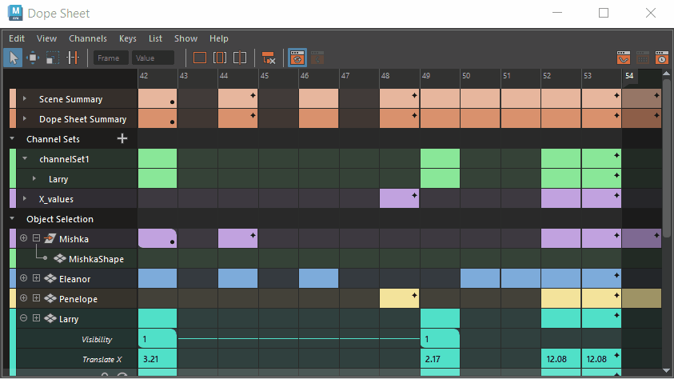

“摄影表”(Dope Sheet)已经过重新设计，可以快速直观地了解、操纵和调整动画计时。

Maya 的
“摄影表编辑器”(Dope Sheet Editor)已经过重新设计，与之前重新设计的
“曲线图编辑器”(Graph Editor)相辅相成，为您提供了一种直观、高效的方式来管理大规模动画更改。
2025 更新包括
- 界面更简洁、条理更清晰，与“曲线图编辑器”(Graph Editor)类似
- 可自定义的调色板，以直观地区分不同的关键帧集
- 关键帧特性的新视觉指示器
- 用于交互和移动关键帧的直观控件
- 用于移动或缩放关键帧的“涟漪编辑”(Ripple Edit)功能
-
自定义通道集
- 新的精度模式，用于查看和操纵关键帧值
- 经修订的菜单选项，以便更快地访问相关的“摄影表”(Dope Sheet)工具和选项
- 直观的热键，可实现快速编辑。
请参见摄影表编辑器(Dope Sheet Editor)和使用“摄影表”(Dope Sheet)编辑关键帧，以了解新特性。